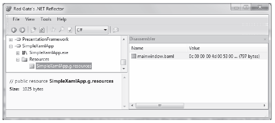
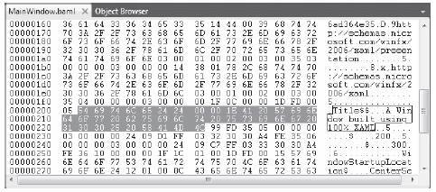
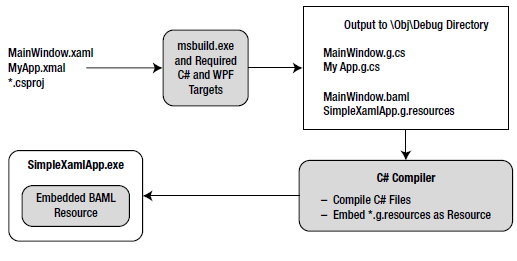

To understand exactly how your markup was transformed into a .NET assembly, you need to dig a bit deeper into the msbuild.exe process and examine a number of compiler-generated files, including a particular binary resource embedded within the assembly at compile time. The first task is to learn how your *.xaml files are transformed into a corresponding C# code base.
The *.targets files specified in a msbuild script contain numerous instructions to translate XAML elements into C# code. When msbuild.exe processed your *.csproj file, it produced two files with the form *.g.cs (where g denotes autogenerated) that were saved into the \obj\Debug directory. Based on the names of your *.xaml file names, the C# files in question are MainWindow.g.cs and MyApp.g.cs.
If you open the MainWindow.g.cs file into a text editor, you will find a class named MainWindow, which extends the Window base class. The name of this class is a direct result of the x:Class attribute in the <Window> start tag. This class also contains a member variable of type System.Windows.Controls.Button, named btnExitApp. In this case, the name of the control is based on the x:Name attribute value within the opening <Button> declaration. This class also contains the handler for the button's Click event, btnExitApp_Clicked(). Here is a partial listing of this compiler generated file:
public partial class MainWindow : System.Windows.Window, System.Windows.Markup.IComponentConnector { internal System.Windows.Controls.Button btnExitApp; private void btnExitApp_Clicked(object sender, RoutedEventArgs e) { this.Close(); } ... }
This class defines a private member variable of type bool (named _contentLoaded), which was not directly accounted for in the XAML markup. This data member is used to determine (and ensure) the content of the window is assigned only once:
public partial class MainWindow : System.Windows.Window, System.Windows.Markup.IComponentConnector { // This member variable will be explained soon enough. private bool _contentLoaded; ... }
Notice that the compiler generated class also explicitly implements the WPF IComponentConnector interface defined in the System.Windows.Markup namespace. This interface defines a single method called Connect(), which has been implemented to prep each control defined in the markup and rig up the event logic as specified within the original MainWindow.xaml file. Before the method completes, the _contentLoaded member variable is set to true. Here is the crux of the method:
void System.Windows.Markup.IComponentConnector.Connect(int connectionId, object target) { switch (connectionId) { case 1: this.btnExitApp = ((System.Windows.Controls.Button)(target)); this.btnExitApp.Click += new System.Windows.RoutedEventHandler(this.btnExitApp_Clicked); return; } this._contentLoaded = true; }
Last but not least, the MainWindow class also defines and implements a method named InitializeComponent(). You might expect that this method contains code that sets up the look and feel of each control by setting various properties (Height, Width, Content, etc). However, this is not the case! How then do the controls take on the correct UI? The logic with InitializeComponent() resolves the location of an embedded assembly resource that is named identical to the original *.xaml file:
public void InitializeComponent() { if (_contentLoaded) { return; } _contentLoaded = true; System.Uri resourceLocater = new System.Uri("/SimpleXamlApp;component/mainwindow.xaml", System.UriKind.Relative); System.Windows.Application.LoadComponent(this, resourceLocater); }
At this point, the question becomes, what exactly is this embedded resource?
When msbuild.exe processed our *.csproj file, it generated a file taking a *.baml file extension. The full name of this file is named based on the initial MainWindow.xaml file, therefore you should see a file called MainWindow.baml in the \obj\Debug folder. As you might have guessed from the name, Binary Application Markup Language (BAML) is a compact, binary representation of the original XAML data.
This *.baml file is embedded as a resource (via a generated *.g.resources file) into the compiled assembly. You can verify this for yourself by opening your assembly using reflector.exe, as shown in Figure 27-10.
Figure 27-10 Viewing the embedded *.baml resource using Reflector
This BAML resource contains all of the data needed to establish the look and feel of the UI widgets (again, such as the Height and Width properties). In fact, if you open the *.baml file into Visual Studio 2010, you can see traces of the initial XAML attributes (see Figure 27-11).
Figure 27-11 BAML is a compact, binary version of the initial XAML markup
The important take-away here is to understand that a WPF application contains within itself a binary representation (the BAML) of the markup. At runtime, this BAML will be plucked out of the resource container and used to make sure all windows and controls are initialized to the correct look and feel.
Also, remember that the name of these binary resources are identical to the name of the standalone *.xaml files you authored. However, this does not imply in any way that you must distribute the loose *.xaml files with your compiled WPF program! Unless you build a WPF application that will dynamically load and parse *.xaml files at runtime, you will never need to ship the original markup.
The final piece of the autogenerated code to examine is the MyApp.g.cs file. Here, you see your Application-derived class with a proper Main() entry point method. The implementation of this method calls InitializeComponent() on the Application-derived type, which, in turn, sets the StartupUri property, allowing each of the objects to establish its correct property settings based on the binary XAML definition.
namespace SimpleXamlApp { public partial class MyApp : System.Windows.Application { void AppExit(object sender, ExitEventArgs e) { MessageBox.Show("App has exited"); } [System.Diagnostics.DebuggerNonUserCodeAttribute()] public void InitializeComponent() { this.Exit += new System.Windows.ExitEventHandler(this.AppExit); this.StartupUri = new System.Uri("MainWindow.xaml", System.UriKind.Relative); } [System.STAThreadAttribute()] [System.Diagnostics.DebuggerNonUserCodeAttribute()] public static void Main() { SimpleXamlApp.MyApp app = new SimpleXamlApp.MyApp(); app.InitializeComponent(); app.Run(); } } }
So far, you have created a full-blown .NET assembly using nothing but two XAML files and a related build script. As you have seen, msbuild.exe leverages auxiliary settings defined within the *.targets file to process the XAML files (and generate the *.baml) for the build process. While these gory details happen behind the scenes, Figure 27-12 illustrates the overall picture regarding the compile-time processing of *.xaml files.
Figure 27-12 The XAML-to-assembly compile-time process
Hopefully you now have a much better idea how XAML data is used to build a .NET application. At this point, you are ready to take a look at the syntax and semantics of XAML itself.